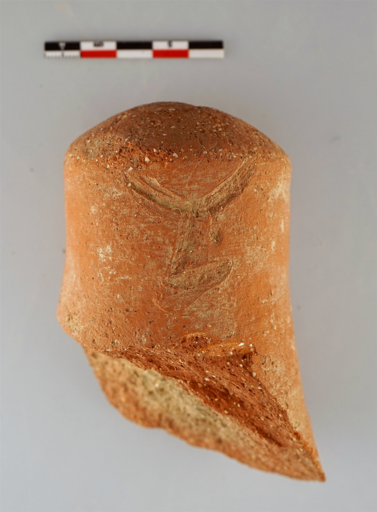

cara-003-lyaeus
Grafito con la marca YL o LY sobre ánfora Dressel 2-4 (Cara, Santacara, Navarra)
Cara (Santacara, Navarra), Hispania citerior ·

Texto
Otras lecturas posibles
- LY
Aparato crítico
La marca puede leerse YL o LY, con las dos letras en ligatura.
Comentario
La marca, claramente un grafito ante cocturam, puede leerse como YL o LY. La lectura más sugerente es ly(aeus), epíteto de Dioniso («el que libera»; también «de Dioniso»), probablemente como referencia al vino contenido en el ánfora. Otras opciones, como nombres personales del tipo Ly(cia/us), Ly(comedes) o Ly(ricus), u otras palabras que comiencen por esas letras, parecen menos probables.
En las conclusiones del artículo, esta pieza y el sello ANDO (nº 1) se sitúan en los primeros años de Tiberio, por la datación del pecio Sud Lavezzi 3 (15 d.C.). El autor la toma como indicio de la importación de vino layetano en territorio vascón durante la primera mitad del siglo I d.C.
Descripción
- Soporte
- Fragmento de ánfora Dressel 2-4. La pasta corresponde a las ánforas de vino producidas en la zona del Maresme.
- Dimensiones
- 10,5 × 5,5 cm (alto × ancho × grosor)
- Disposición
- Marca de 3,3 x 3,1 cm, grafito ante cocturam.
- Escritura
- Dos letras, Y y L, unidas en ligatura. Esta forma de presentar la ligatura coincide con la del sello LYA, documentado en Montcada (Barcino) y en el pecio Sud Lavezzi 3.
- Lugar de origen
- Cara (Santacara, Navarra), Hispania citerior
- Hallazgo
- Excavaciones de M.A. Mezquíriz en Santacara, campaña de 1982 (Td. 3, estrato I, 6 de diciembre de 1982).
- Ubicación actual
- Almacén de Arqueología del Gobierno de Navarra, n.º inv. Caja 2219
- Sigla
- Sant. 82. Td.3. Estrato I. 6/XII/82
Bibliografía
- P. Ozcáriz Gil, «Sellos, tituli picti y grafitos sobre instrumentum procedentes de la ciudad de Cara (Navarra)», Ex Baetica Romam. Homenaje a José Remesal Rodríguez (2020).